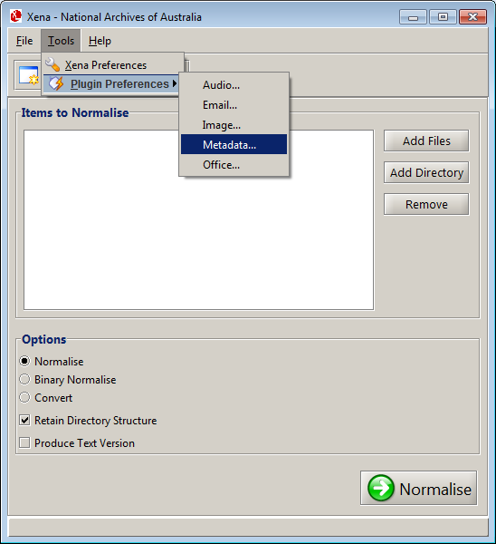
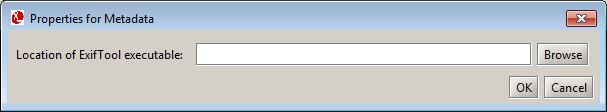

Metadata
Xena uses Exiftool and Apache Tika to extract metadata from input files. Exiftool is an external program.
Location of external program
Depending on your operating system, the exiftool executable may be included with the
Xena package. If so, this will be located within a sub-directory in the same directory as the Xena program
(xena.jar). Otherwise, the executable must be installed separately.
- Linux - install the exiftool package via your distribution's package manager, after which the exiftool executable is most likely located under /usr/bin/.
- OS X - the exiftool executable is located in the macx86 sub-directory.
- Windows - the exiftool executable is located in the winx86 sub-directory.
How to configure the Exiftool plugin
- From the Xena menu bar, select Tools - Plugin Preferences - Metadata:

Result: The Metadata Preferences window is displayed.

- Click Browse button.
- Navigate to the location of the exiftool executable (see above).
- Click Open.
- Click OK to save this setting.